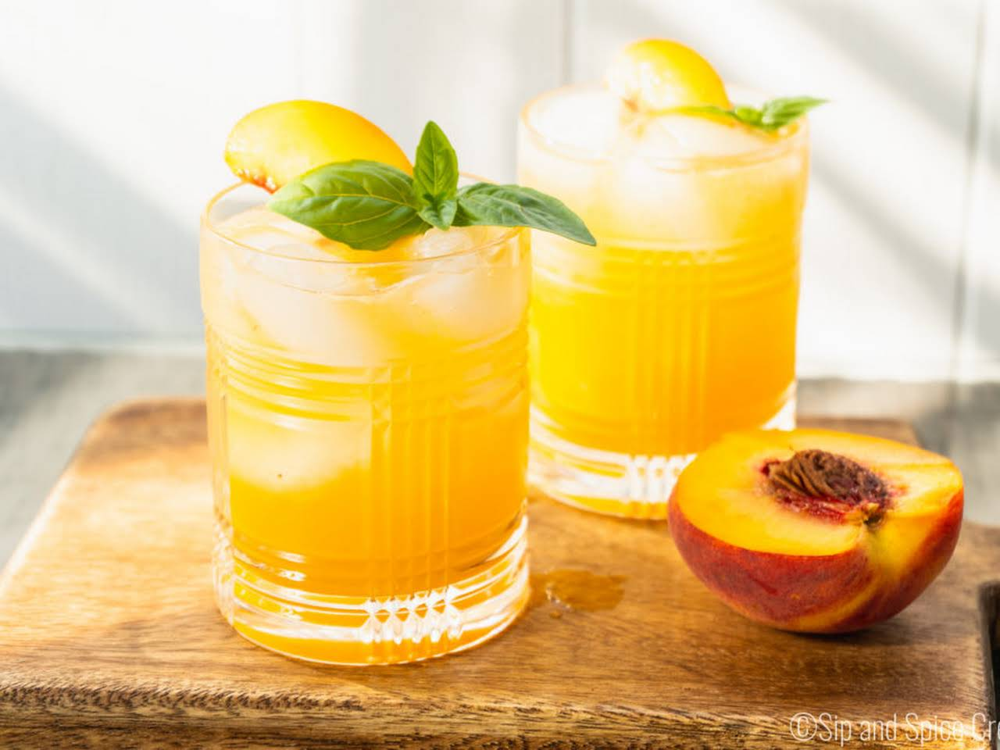

Whiskey Peach

Noice!
This content is intended solely for users of legal drinking age
Drink responsibly.
Ingredients
- 1/2 cup ice (70g)
- 1 tblspn peach jam
- 2 tblspns lemon juice
- 2fl oz whiskey (60ml)
- lemon twist, for garnish
Steps
- In a cocktail shaker, combine the ice, peach jam, lemon juice and whiskey.
- Cover with the lid and shake vigorously for 30 seconds.
- Strain into desired serving glass.
- Garnish with lemon twist.
- Enjoy!